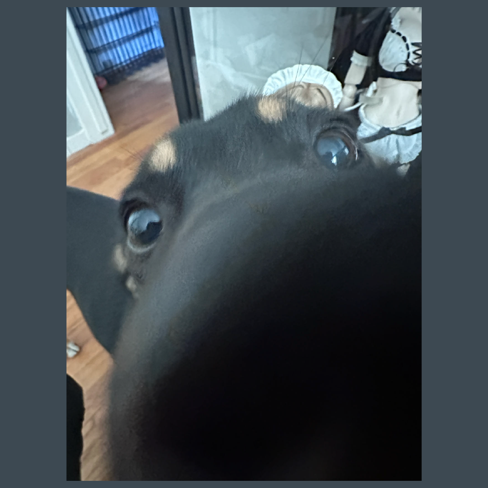

Kafe
Artist Statement
“Kafe” is a primarily text-based game with a nostalgic pixel art style where players step into a popular maid café and interact with Aiko, an endearing maid. Players make choices from multiple options, each influencing the story's outcome and unlocking different endings. The game’s visual design is crafted in Aseprite, with programming handled in Godot, creating a cute and lighthearted aesthetic that gradually shifts, unveiling darker themes beneath the surface.
Initially, the café feels warm and inviting, but subtle clues suggest something is amiss. As the narrative unfolds, players encounter increasingly unsettling moments that contrast sharply with the café’s cheerful appearance. This duality between the nostalgic art and the psychological horror elements underscores a central theme: the choices we make and the unseen consequences they may hold. In Kafe, this contrast is essential, as it allows players to question their own perception, reflect on the story’s unsettling developments, and immerse themselves in the eerie experience of realizing not everything in the café is as it seems.
Exhibition
Qiaoxin Deng
| Bio | Qiaoxin Deng is a digital artist based in San Jose, known for creating animated films that capture the nostalgic essence of vintage video games. Qiaoxin expertly combines the charm of early gaming graphics with contemporary themes, using digital tools such as Procreate, After Effects, and Blender.With a focus on pixel art and short animations, Qiaoxin's work is characterized by its unique ability to convey motion and emotion through a simplified aesthetic. The artworks are compact yet expressive, reminiscent of the arcade and console games from the past, designed to engage and evoke a shared nostalgia.Looking to the future, Qiaoxin plans to specialize in producing nostalgic animation films and games, continuing to explore the creative challenges within pixel art while integrating interactive elements using programming languages like js. This approach enhances the viewer's experience, making it more engaging and immersive, and bridges the gap between past and present artistic expressions. |
| Contact |